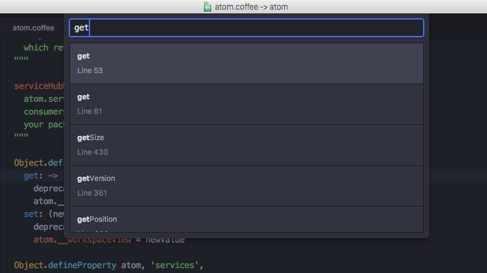
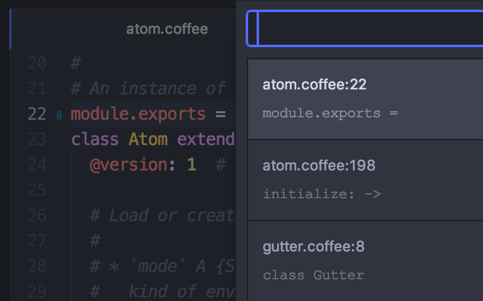

在 Atom 里移动
虽然使用鼠标和方向键在 Atom 里移动已经足够简单，但 Atom 还额外提供了一些快捷键，能让你的手不用离开键盘，更快地在文档中导航。
首先，Atom 复用了许多 Emacs 快捷键用于在文档中导航。比如你可以使用 ctrl-P 和 ctrl-N 来将光标上移或下移一个字符，使用 ctrl-B 和 ctrl-F 将光标左移或右移一个字符。这和使用方向键的效果是一样的，很适合那些不喜欢把手移到方向键位置的人。
除了以单个字符为单位的移动，还有许多其它用于移动的快捷键。
alt-B，alt-left：移到词首
alt-F，alt-right：移到词尾
cmd-right，ctrl-E：移到行尾
cmd-left，ctrl-A：移到行首
cmd-up：移到文件开头
cmd-down：移到文件末尾
你也可以使用 ctrl-G 直接移动到某一行（和列），按 ctrl-G 后会弹出一个对话框询问你想跳转到哪一行，这时也可以输入 row:column 来跳到那一行的某个字符。

图 1. 直接跳到某一行
通过符号（Symbols）导航
你也可以通过其它信息来跳转。可以使用 cmd-r 来跳转到方法定义之类的符号，按键之后会在 Atom 里打开一个包含当前文件中所有符号的列表，可以根据符号进行模糊查找，cmd-t 与此类似，能对项目里的文件名进行模糊查找。如果想在整个项目范围内查找符号，可以使用 cmd-shift-r。

图 2. 在项目范围内查找符号
你还可以使用 ctrl-alt-down 直接跳转到光标下的方法或函数的声明。
当然首先你需要确保已经为你的项目生成了 tags（或者 TAGS）文件。tags 文件是通过 ctags 生成的，安装 ctags，在项目的根目录运行 ctags -R src/ 即可。
如果你在 Mac 下并且使用 Homebrew，可以运行 brew install ctags 来安装 ctags。
你可以在 home 目录下创建一个 .ctags 文件（~/.ctags）来自定义生成 tags 文件的规则。在 这个链接 能看到 .ctags 文件示例。
通过符号导航的功能是在 atom/symbols-view 这个 package 里实现的。
Atom 书签
Atom 还有一个非常棒的功能，就是可以给一些指定的行添加书签，然后就能快速地跳转到这些书签所在的位置。
可以按 cmd-F2 给当前行添加书签，再按一次是取消书签。你可以给项目里多个重要位置设置书签，然后使用它们来快速查找和跳转到这些地方。添加书签后，在行号后面会出现一个小的书签标记，效果见下面图中第 22 行。
按 F2 会跳转到当前文件里的下一个书签，按 shift-F2 会跳转到上一个书签。
按 ctrl-F2 会列出项目里的所有书签，然后就能快速地筛选并跳转到它们中的某一个。

图 3. 查看和筛选书签
书签功能是在 atom/bookmarks 这个 package 里实现。